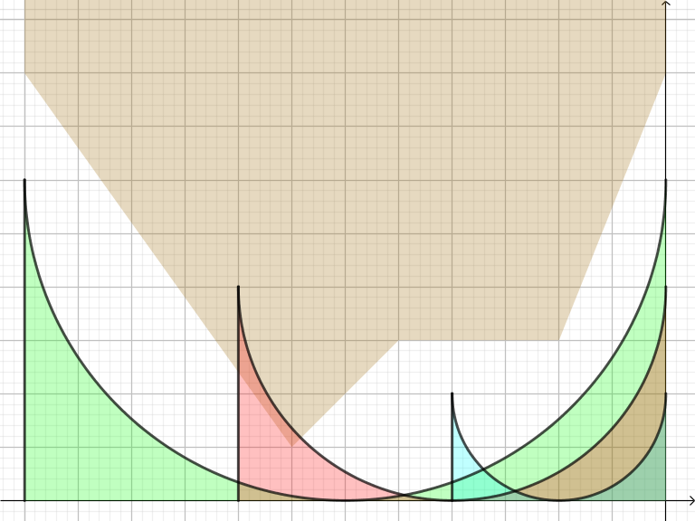
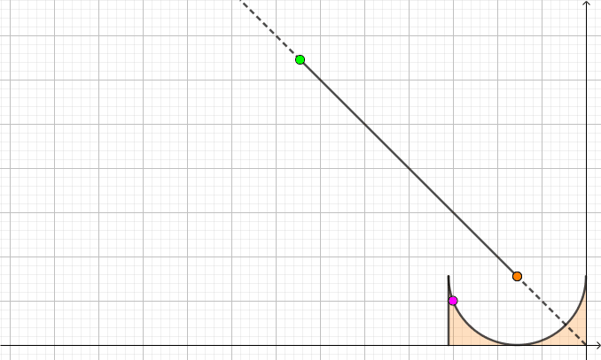

给定一个地形剖面图，用 $n$ 个点 $\left( x_i, y_i \right)$ 描述，点 $i$ 和点 $i + 1$ 之间有直线连接的地面。
你需要建一座拱桥，连接点 $1$ 和点 $n$，桥面的高度为 $h$。
你可以在桥中间建若干个柱子，以分配重量，柱子只能恰好建在给出的 $n$ 个点上 (点 $1$ 和点 $n$ 上必须有柱子)。
相邻的两根柱子之间需要建一个半圆形的拱，准确地说，拱的半径为两根柱子之间的距离的一半，并且与两根柱子和桥面相切。拱可以与地面相切，但不能相交。一些拱桥的建造例子如下图：

同时，桥的花费与柱子高度和拱面积有关，具体地，给出两个参数 $\alpha$ 和 $\beta$，则一座柱子高度分别为 $h_1, h_2, \cdots, h_k$，柱子之间的水平间距分别为 $d_1, d_2, \cdots, d_{k-1}$ 的桥的费用为 $$ \alpha \cdot \sum_{i=1}^k h_i + \beta \cdot \sum_{i=1}^{k-1} d_i^2 $$ 其中 $\alpha, \beta$ 是常数。
求是否可以建出一座桥，以及能建出的情形下费用的最小值。
第一行包含四个正整数 $n, h, \alpha, \beta$ ($2 \leq n \leq 10000; 1 \leq h \leq 10^5; 1 \leq \alpha, \beta \leq 10000$)，分别表示地形剖面图的点数，桥期望修建的海拔高度，以及和费用有关的比例系数。
接下来 $n$ 行，每行两个整数 $x_i, y_i$ ($0 \leq x_i < x_{i+1} \leq 10^5; 0 \leq y_i < h$)，描述地形剖面图。
输出一行一个整数，表示建一座拱桥所需的最小费用。如果无法建出一座桥，则输出 impossible。
考虑最基础的 DP —— 用 $f_i$ 表示建造 $\left[ 1, i \right]$ 的最小花费，若无法建成则 $f_i = + \infty$，则边界为 $f_1 = h - y_1$，答案为 $f_n$。
以下为方便起见，将整个图上下颠倒过来，同时令 $h_i \gets h - y_i$，这样整个问题就和 $h$ 无关了。
对于转移，我们只需要枚举上一根柱子的位置 $j$，用 $Q \left( j, i \right)$ 表示能否放置一个拱连接 $x_j \sim x_i$。于是易得转移方程 $$ f_i = \min_{\substack{1 \leq j < i \\ Q \left( j, i \right) = \mathrm{true}}} \left( f_j + \alpha \cdot h_j + \beta \cdot \left( x_i - x_j \right)^2 \right) $$
但不幸的是，暴力判断 $Q \left( l, r \right)$ 的时间复杂度为 $O \left( r - l \right)$ 的，这样总时间复杂度就是 $O \left( n^3 \right)$ 的，无法接受。
那该怎么优化呢？由下图可知满足条件的合法 $j$ 不一定有单调性，因此只能从优化 $Q \left( l, r \right)$ 的计算速度入手了。
我们可以固定右端点 $r$，这样只需在 $O \left( n \right)$ 时间内计算出所有的 $Q \left( i, r \right)$ 即可。
首先判断 $\left( i, r \right)$ 肯定只需要考虑 $\left[ x_i, x_r \right]$ 的情况。由半圆的凸性可知，$Q \left( i, r \right) = \mathrm{true}$，当且仅当折线的所有顶点不在拱形区域内部。形式化地，对于 $\forall i \leq j \leq r$，$\left( x_j, y_j \right)$ 在拱形区域 (上图中的阴影部分) 的外部。
(证明留作练习，利用凸集的定义即可)
因此我们把连续的问题转化为了离散的问题，即判定每个点是否在拱形区域内部。
易知当右端点 $r$ 固定时，每个左端点可以唯一固定一个半径 $R$，因此下面只需要讨论半径 $R$。
考虑对于一个固定的点 $\left( x_j, y_j \right)$，可以发现当左端点 $< x_j$ 时，欲使 $\left( x_j, y_j \right)$ 在拱形区域外部，满足条件的 $R$ 一定是一个区间，如下图：
令 $w = x_r - x_j > 0$。则根据 $w$ 和 $2 y_j$ 的关系可以分为两类：
$w > 2 y_j$。
此时的情况类似上图，$R$ 有一个下界和上界。利用简单的初中几何和二次方程的知识可知 $R$ 应该满足 $$ w + y_j - \sqrt {2 w \cdot y_j} \leq R \leq w + y_j + \sqrt {2 w \cdot y_j} $$
$w \leq 2 y_j$。
此时不难发现 $R$ 没有下界限制，只有一个上界 $w + y_j + \sqrt {2 w \cdot y_j}$。当然，这里可以令下界为 $0$ (或 $\dfrac w2$)。
总之，每个 $\left( x_j, y_j \right)$ 都对最终的 $R$ 会产生一个限制区间 $I_j = \left[ m_j, M_j \right]$，因此 $Q \left( i, r \right) = \mathrm{true}$ 的充分必要条件是 $$ \frac {x_r - x_i} 2 \in \bigcap_{i \leq j \leq r} I_j $$
于是我们只需要从大到小枚举 $j$ 并求出限制区间 $I_j$，动态维护这些区间 $I_i, I_{i+1} \cdots, I_r$ 的交，即可完成 $O \left( 1 \right)$ 判定。
总时间复杂度 $O \left( n^2 \right)$，可以通过。
#include <bits/stdc++.h>
using std::cin;
using std::cout;
typedef long long ll;
const int N = 10054;
const ll INF64 = 0x3f3f3f3f3f3f3f3fll;
int n, h;
int x[N], y[N];
ll alpha, beta, f[N];
inline void up(int &x, const int y) {x < y ? x = y : 0;}
inline void down(int &x, const int y) {x > y ? x = y : 0;}
inline void down(ll &x, const ll y) {x > y ? x = y : 0;}
int main() {
int i, j, w, g, inf, sup; // range of 2R
std::ios::sync_with_stdio(false), cin.tie(NULL);
cin >> n >> h >> alpha >> beta >> *x >> *y;
*f = alpha * ll(*y = h - *y);
for (i = 1; i < n; ++i) {
cin >> x[i] >> y[i], inf = 0, sup = 2 * (y[i] = h - y[i]), f[i] = INF64;
for (j = i - 1; j >= 0; --j) {
w = x[i] - x[j], g = sqrtl(8. * w * y[j]);
down(sup, 2 * (w + y[j]) + g);
if (w > 2 * y[j]) up(inf, 2 * (w + y[j]) - g);
if (inf <= w && w <= sup)
down(f[i], f[j] + alpha * y[i] + beta * w * w);
}
}
if (f[--n] >= INF64) cout << "impossible\n";
else cout << f[n] << '\n';
return 0;
}
坑1：具体实现时可以利用 $2 R = 2 \cdot \dfrac {x_r - x_i} 2 \in \mathbb Z$，从而使用整数区间方便计算。
坑2：计算时保持精度，$f_i$ 需要使用 long long。